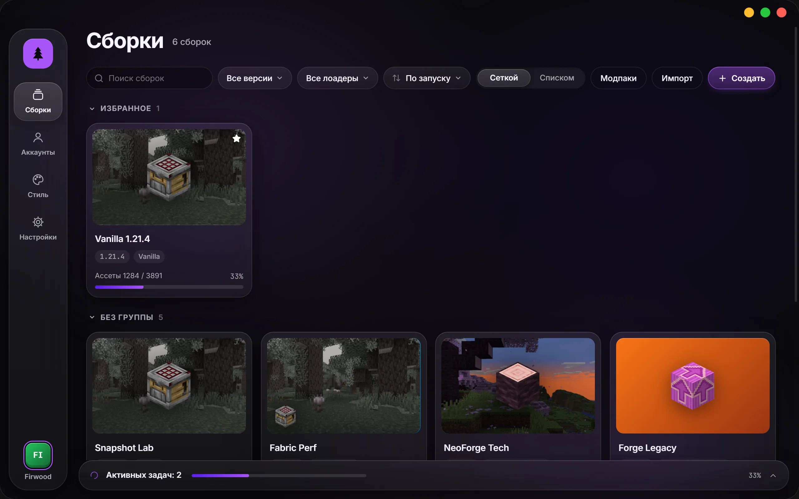
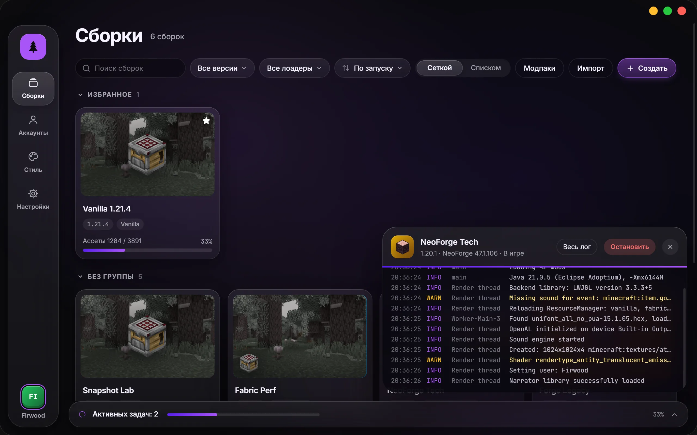
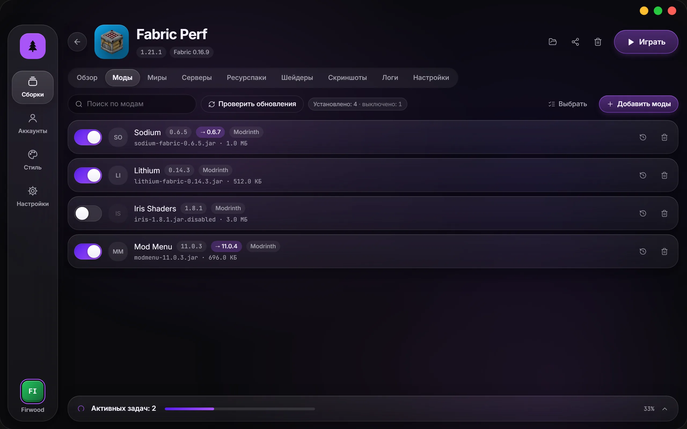
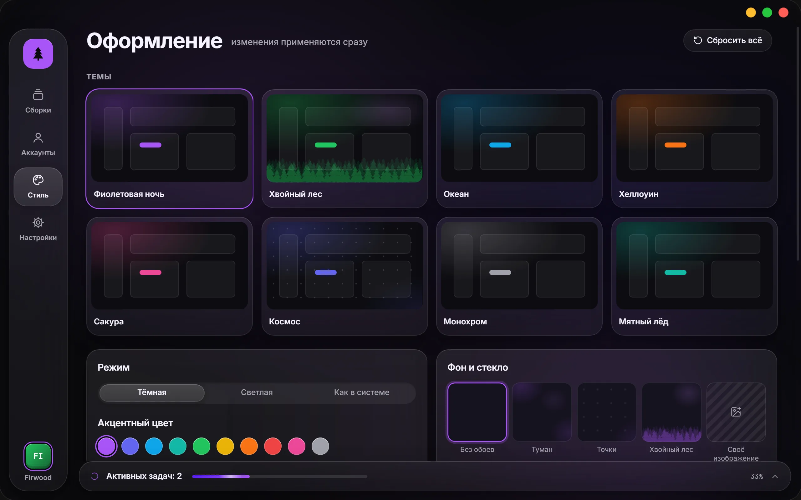

Лаунчер Minecraft с открытым кодом
Сборки с модами на Fabric, Forge, NeoForge и Quilt, моды с Modrinth и CurseForge в один клик. Бесплатно, без рекламы, весь код — на GitHub.

Код открыт целиком
Лицензия MIT: лаунчер можно читать, собирать, менять и распространять. Он не собирает статистику и не показывает рекламу — это видно по исходникам, а не только по обещанию.
Внутри — Rust и Tauri, интерфейс на React. Нашли ошибку или хотите что-то добавить — пишите в Issues или присылайте pull request.
Собрать из исходников
git clone https://github.com/perdeyvariant-hue/FirLauncher
cd FirLauncher
npm install
npm run tauri devНужны Node.js и Rust. Подробности — в DEVELOPMENT.md.
Что умеет
Сборки
- Каждая сборка отдельно
- Свои моды, миры и настройки — ничего не смешивается между версиями.
- Любая версия, любой лоадер
- Fabric, Quilt, Forge и NeoForge. Лоадер можно поставить или сменить прямо в настройках сборки.
- Импорт и экспорт
- Модпаки .mrpack, архивы CurseForge, сборки MultiMC и Prism — достаточно перетащить файл в окно.
- Ярлык на рабочий стол
- Запускает игру сразу, без окна лаунчера.
Моды
- Modrinth и CurseForge
- Поиск с фильтрами, установка в один клик, зависимости ставятся сами.
- Обновления с описанием
- До обновления видно, что изменилось в каждой новой версии мода.
- Бережные обновления модпаков
- Ваши моды и правки конфигов остаются на месте.
Если что-то сломалось
- Разбор вылета
- Лаунчер читает лог и объясняет причину простыми словами, часто с кнопкой «Исправить».
- Снимки сборки
- Перед обновлениями сохраняются моды, конфиги и лоадер — откат в один клик.
- Резервные копии миров
- Автоматически перед обновлениями и по кнопке.
Игра
- Microsoft и оффлайн-аккаунты
- С оффлайн-аккаунтом работает и сетевая игра на серверах без проверки лицензии.
- Java ставить не нужно
- Лаунчер сам скачает подходящую версию.
- Обновляется сам
- Новая версия приходит кнопкой прямо в лаунчере и проверяется по цифровой подписи.



Скачать
Последняя версия на странице релизов.
Windows 10 и 11
macOS
Linux
Уже установили? Скачивать заново не нужно: в лаунчере появится кнопка «Обновить и перезапустить».
Windows. Установщик пока не подписан сертификатом, поэтому SmartScreen может предупредить — нажмите «Подробнее», затем «Выполнить в любом случае».
macOS. Приложение не заверено Apple: откройте его правой кнопкой мыши и выберите «Открыть». Если система пишет, что файл повреждён, выполните в Терминале xattr -cr /Applications/FirLauncher.app.
Вопросы
Это правда бесплатно?
Да. FirLauncher распространяется по лицензии MIT, без платных функций и рекламы.
Нужна ли лицензия Minecraft?
Для игры на официальных серверах и для своего скина нужен аккаунт Microsoft с купленной игрой. Оффлайн-аккаунт подходит для одиночной игры, игры по сети дома и серверов, которые не проверяют лицензию.
Где хранятся сборки?
В папке данных лаунчера: %APPDATA%\FirLauncher на Windows, ~/Library/Application Support/FirLauncher на macOS и ~/.config/FirLauncher на Linux. Её можно сменить в настройках.
Чем он отличается от официального лаунчера?
FirLauncher сделан для игры с модами: у каждой сборки свои моды и миры, моды ставятся из каталогов с зависимостями, модпаки импортируются и обновляются, а при вылете лаунчер объясняет, что пошло не так.